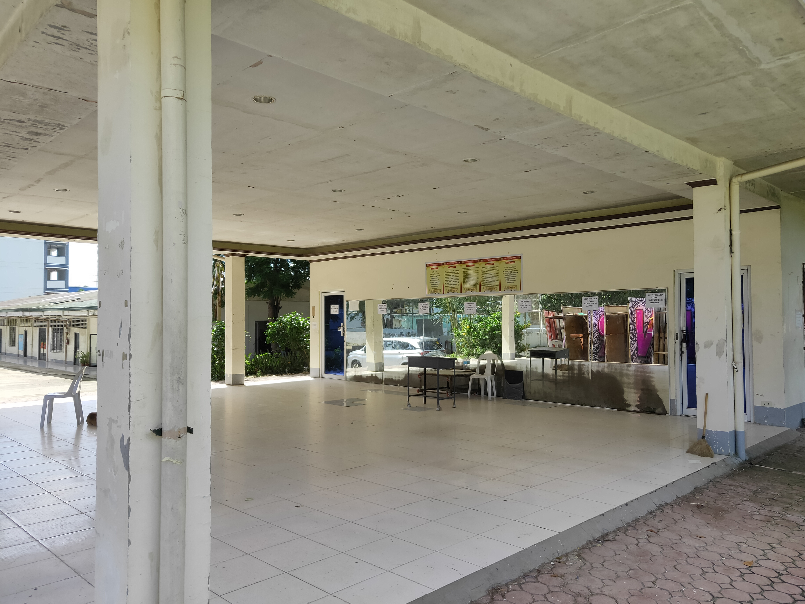

Sports and Recreation at Cebu Technological University Danao Campus
Discover the top-notch sports facilities that foster athleticism, teamwork, and community at CTU Danao Campus.
Discover the top-notch sports facilities that foster athleticism, teamwork, and community at CTU Danao Campus.
CTU Danao Campus is home to a range of modern sports facilities that support athletic development, recreation, and cultural activities. From basketball courts to tennis courts, these facilities provide students and the community with opportunities to engage in various sports and physical education activities.
The name “Kadasig” is a Cebuano term, which may be translated as enthusiasm and courage. The name hopes to inspire the users of this facility to engage in basketball and futsal games with the courage in their hearts to pursue the skills they have. Honing the students' athletic abilities and providing recreation to the CTU Danao community are the responding needs for its construction. Set in a spacious landscape and other campus sports facilities, it has two baskets on both ends and a stage. The stage is for the performing arts productions and other outdoor activities, thus making the Kadasig gym a multipurpose place.

The center serves as a facility for sports and socio-cultural affairs. The open space facilitates physical education classes from rhythmic activities to lessons in sports. The center can also accommodate small gatherings for sports or socio-cultural-related meetings, seminars, workshops, training, and exhibits. The building houses two adjacent offices to facilitate formal or informal transactions for sports or socio-cultural associated affairs.
It has a new 8-lane rubberized track built for university athletes and other aspiring fitness enthusiasts in Danao City. The facility's multipurpose function is also used for university athletic meets, concerts, festivals, and other prestigious sports events. The annual Karansa Festival, the official festival of Danao City, is performed in this complex and other prestigious sporting events like the Xterra Asia-Pacific Championship.

CTU Danao Tennis Court caters to the general population. It offers fun and fitness to people of all ages, from four to 94. Its growth in popularity can be seen all the way to the local level. It also boasts a genuinely active and growing tennis tournament at the university level and has produced regional and national State Colleges and Universities Athletic Association (SCUAA) tennis players. There is no question that this tennis facility has brought about an immediate influx of tennis enthusiasts. This tennis court in the campus generates opportunities for the stakeholders in the area to participate in the following tennis-related activities: After-school programs, summer tennis clinics, leagues and tournaments, SCUAA and district tennis matches, faculty and staff matches, and social mixers and inter clubs match.